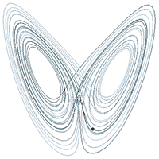
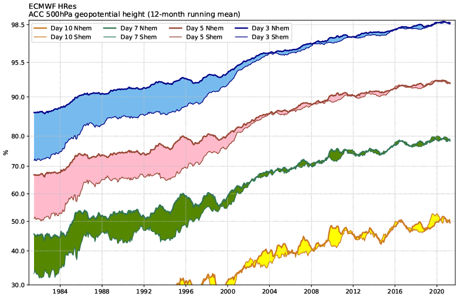
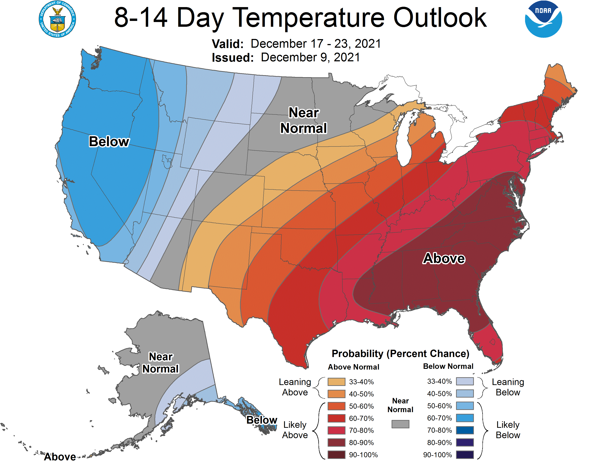
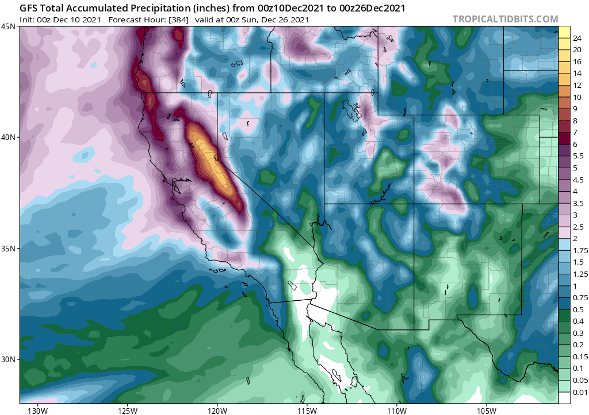
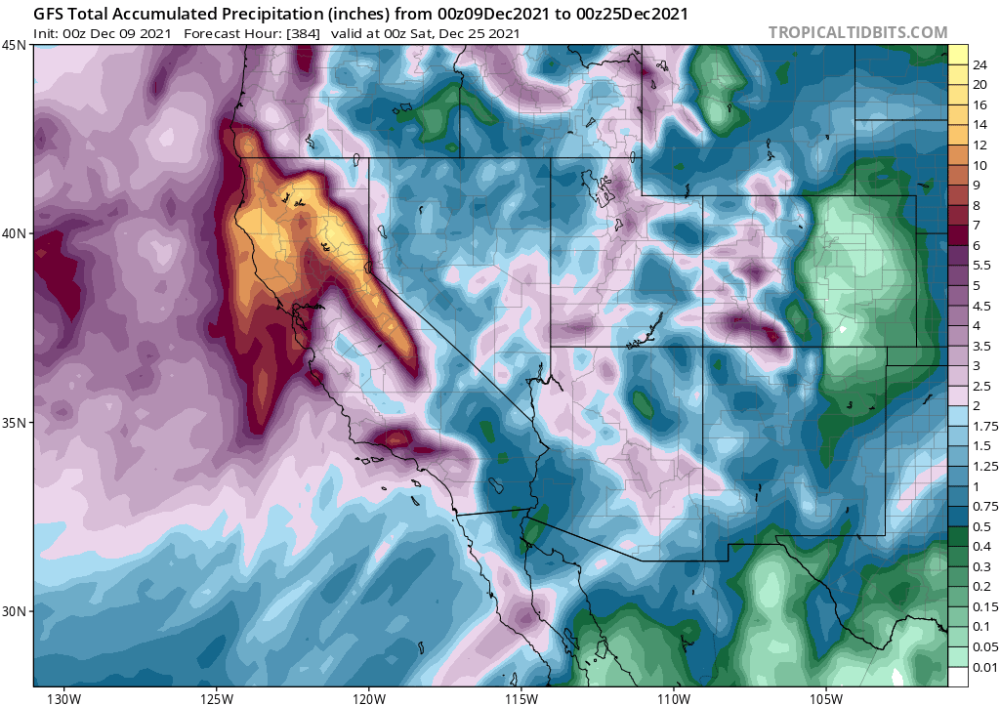

Jesse Robinett Climate of La Jolla California Low Clouds Case Studies The Follies of 90 Day Forecasting More Resources
This article is entirely my opinion; please do not sue me if you are in a litigous mood. This is just an assignment.
Before examining AccuWeather's claims about their forecasts, some preliminary knowledge on weather forecasting is in order.
The primary equations governing atmospheric motion are the infamous Navier-Stokes equations, which describe the evolution of velocity with time in a fluid, the continuity equation, which ensures that fluid motions preserve mass, and the ideal gas law, which relates pressure, temperature, and density. Importantly, it appears that solutions to the Navier-Stokes equations are chaotic
But, you may ask, what does it mean to say something is chaotic. I will here defer to Edward Lorenz, who describes it as such:
"Chaos: When the present determines the future, but the approximate present does not approximately determine the future."Indeed, Lorenz himself discovered one of the most frequently cited examples of chaos, the Lorenz Attractor. Two arbitrarily close starting points will eventually end up on completely different lobes of the attractor, and so it is chaotic.

That's because the atmosphere is a chaotic system, and so even miniscule errors in the initial conditions lead predicted conditions to wildly diverge from what will actually occur after some period of time. In general that period of time is no less than a few weeks in the best of circumstances. Although forecast accuracy is a surprisingly tricky thing to assess, the general consensus seems to be that deterministic forecasts beyond 10 days at most are inaccurate. In fact, the National Weather Service only forecasts 7 days ahead. This NOAA article says that 10-day forecasts are only right about 50% of the time, but the statement is woefully imprecise, so take it with a grain of salt.
However, I may have found the source for their claim at the European Center For Medium Range Weather Forecasting.

As is apparent from the image, the skill at about 10 days for 500hPa height is about 50%. It should be noted that this result should not be generalized to other important parts of the weather such as precipitation; a separate evaluation of skill would be necessary for that. Regardless, it still illustrates the difficulties of long range forecasting.
Weather forecasting agencies such as NOAA do offer longer range forecasts such as those from the Climate Prediction Center. Their recent forecast is shown below

In the CPC forecast, notice that they are not predicting actual high and low temperatures, but instead probabilities of above and below average temperatures. This reflects the greatly increased uncertainty in forecasts for the far future.
With most of the heavy lifting done, we are now prepared to respond appropriately to AccuWeather's uber long-range forecasts.
AccuWeather claims
AccuWeather’s new industry-leading forecast provides 90 days of daily forecasts, a valuable tool for planning the best time of the season for road trips, vacations and outdoor activities, letting users follow the forecast and make more detailed plans as the date approaches.
As we have already discussed, weather model skill deteriorates swiftly at longer lead times, to the point where individual models become useless and one must speak in probabilities. However, not only is 90 days is significantly longer than even the CPC's probabilistic forecasts, but AccuWeather claims to predict the daily weather, while the CPC is predicting for entire weeks/months at a time. That temporal resolution is simply not at all feasible, and to say that it is is deceptive to say the least. It would be more helpful if after a certain lead time they switched away from daily forecasts to probabilistic ones, and then when those lose skill simply give the location's climatology.
Another, more fun argument against AccuWeather's claims is to look at actual model output at extremely long lead times from state of the art weather models like the GFS and ECMWF and see the absolutely ridiculous run-to-run flip flops and disagreement between the two models. I've put two recent hour 384 (16 day) GFS forecasts for total accumulated precipitation over the entire model run. The level of agreement is not particularly encouraging; for examples Baja went from quite wet to almost completely dry. Check out Tropical Tidbits in the extra resources if you want to see more weather model runs for yourself.


{kind=link}